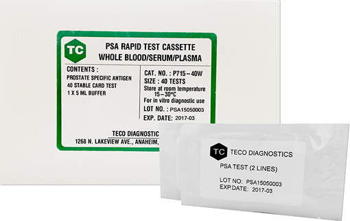

ANTÍGENO PROSTÁTICO PSA TECO DIAGNOSTICS
PSA Antígeno prostático sangre total, suero o plasma.

CARACTERÍSTICAS:
Caja con 40 pruebas.
Prueba rápida para la detección de antígeno prostático (PSA específico).
Fácil interpretación de resultados.
Resultados en 5 minutos.
Registro: 2264R2015 SSA
DATOS COMPLEMENTARIOS: Para mayor información comunicarse a:
FORE CARE MÉDICAL, S.A. DE C.V.
Tels.: (55) 5568-8240, 5568-8061
e-mail: info@forecaremedical.com
atencionclientes@forecaremedical.com
ventasprivado@forecaremedical.com
ventasgobierno@forecaremedical.com
www.forecaremedical.com